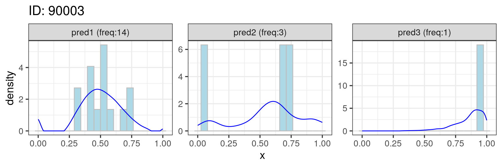
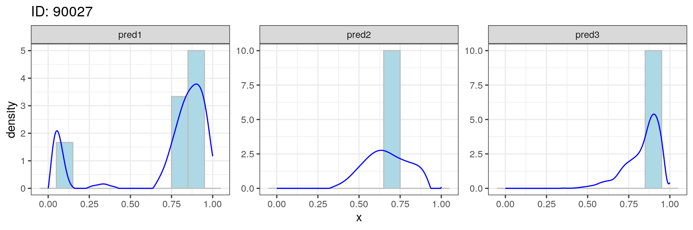
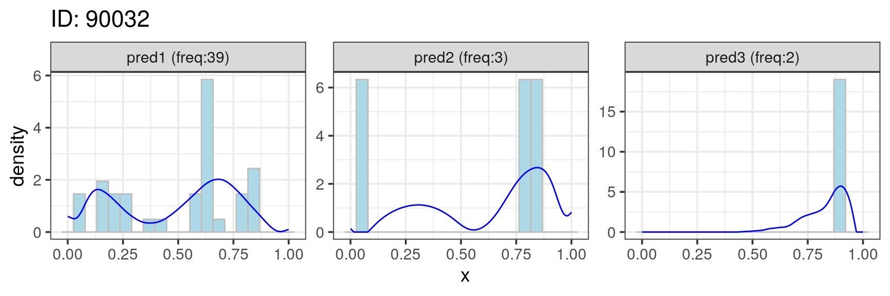

In step I, we use the petler.fpca function to perform a functional PCA (Wu et al. 2013), which is used to estimate the mean density functions (and covariance functions) using longitudinal encounter data.
library(PETLER) ## Loading required package: survival
system.time(obj <- petler.fpca(data_org)) ## user system elapsed ## 79.358 19.671 54.616 saveRDS(obj, "step1.rds") # save results for step II
The estimated mean density functions (and covariance functions) from FPCA are then used to obtain subject-specific densities, from which features will be extracted.

Important features from subject-specific densities and FPCA may include:
first code time (1stCode)
peak time (Pk)
change point time (ChP)
first functional PC score (1stScore)
log of total number of codes (logN)
head(obj$ValidFt[, 1:5]) ## 1stCode1 Pk1 ChP1 1stScore1 logN1 ## 90001 9.00000 50.383819 5.7376591 -0.3877255 1.386294 ## 90002 70.37372 70.373717 70.3737166 -0.1452653 0.000000 ## 90003 5.00000 7.100616 4.2229979 0.6688311 2.708050 ## 90004 33.80698 33.806982 33.8069815 -0.1452653 0.000000 ## 90005 98.62834 98.628337 98.6283368 -0.1452653 0.000000 ## 90006 1.00000 1.144641 0.2641478 -0.2494385 1.386294 head(obj$ValidFt[, 6:10]) ## 1stCode2 Pk2 ChP2 1stScore2 logN2 ## 90001 44.00000 42.853142 34.605257 -1.2659047 0.6931472 ## 90002 21.00000 15.482218 5.805832 -0.4044147 1.0986123 ## 90003 1.00000 9.043943 7.250103 -0.4905999 1.3862944 ## 90004 33.80698 33.806982 33.806982 -0.8923211 0.0000000 ## 90005 10.00000 17.259959 1.232854 -0.2297048 1.6094379 ## 90006 17.60986 17.609856 17.609856 -0.8923211 0.0000000 head(obj$ValidFt[, 11:15]) ## 1stCode3 Pk3 ChP3 1stScore3 logN3 ## 90001 71.72074 71.72074 71.72074 1.894450 0.0000000 ## 90002 70.37372 70.37372 70.37372 1.894450 0.0000000 ## 90003 14.00000 13.75277 12.93060 1.125382 0.6931472 ## 90004 33.80698 33.80698 33.80698 1.894450 0.0000000 ## 90005 98.62834 98.62834 98.62834 1.894450 0.0000000 ## 90006 17.60986 17.60986 17.60986 1.894450 0.0000000
The extracted features are saved in step1.rds and will be used in step II of the PETLER algorithm.